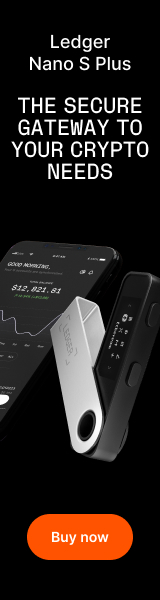
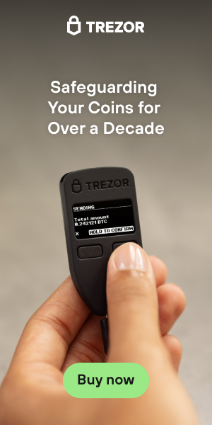
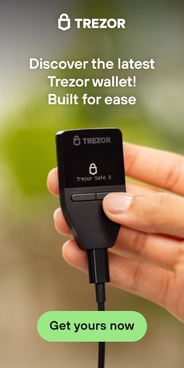
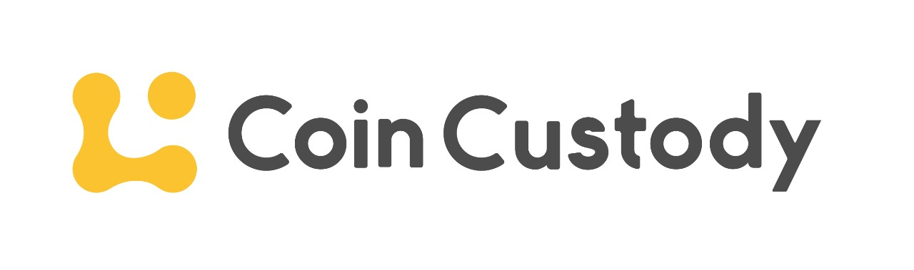

Wallets
Las wallets, o carteras digitales, son una parte fundamental en el mundo de las criptomonedas. Son las herramientas que te permiten almacenar, gestionar y asegurar tus criptoactivos de manera segura y eficiente. En esta sección, exploraremos todo lo que necesitas saber sobre las diferentes tipos de wallets disponibles y cómo elegir la adecuada para tus necesidades.
¿Qué son las Wallets de Criptomonedas?
Una wallet de criptomonedas es esencialmente tu billetera digital para almacenar y gestionar las llaves privadas de tus criptoactivos. Funcionan de manera similar a una cuenta bancaria, pero con importantes diferencias. En lugar de almacenar moneda física, las wallets almacenan tus criptomonedas y las claves privadas necesarias para acceder y gestionar tus fondos de manera segura.
Tipos de Wallets
Existen varios tipos de wallets, cada una con sus propias ventajas y desventajas:
- Wallets en Línea (Online): Estas wallets se almacenan en servidores en línea y son accesibles desde cualquier lugar con conexión a internet. Son convenientes para transacciones frecuentes, pero pueden ser más vulnerables a ataques cibernéticos.
- Wallets de Software: Estas wallets se instalan en tu dispositivo (como tu computadora o teléfono) y te dan un mayor control sobre tus claves privadas. Son ideales para aquellos que valoran la seguridad y el acceso sin conexión.
- Wallets de Hardware: Estas son carteras físicas que almacenan tus criptoactivos fuera de línea. Ofrecen el más alto nivel de seguridad y son ideales para el almacenamiento a largo plazo.
- Wallets de Papel: Estas wallets implican imprimir tus claves privadas en papel y almacenarlas de manera segura. Son una opción extremadamente segura contra hackeos en línea, pero deben manejarse con cuidado.
Cómo Elegir la Wallet Correcta
La elección de una wallet adecuada depende de tus necesidades y preferencias personales. Considera factores como la seguridad, la conveniencia y el propósito de tus criptoactivos al seleccionar la mejor opción para ti. En esta sección, te proporcionaremos información detallada sobre cada tipo de wallet y consejos para elegir la que mejor se adapte a tus objetivos. No subestimes la importancia de una wallet segura y bien gestionada al explorar el emocionante mundo de Bitcoin y criptoactivos. Estamos aquí para ayudarte a tomar decisiones informadas y a proteger tus inversiones en criptomonedas. ¡Sigue explorando para obtener más información sobre wallets y cómo utilizarlas de manera efectiva en tu viaje en el universo de las criptomonedas!
Software Wallets de Bitcoin

Una software wallet de Bitcoin es una aplicación o programa informático que te permite almacenar, gestionar y utilizar tus bitcoins de forma segura. Estas wallets son conocidas por su facilidad de uso y accesibilidad, ya que se ejecutan en dispositivos como computadoras y teléfonos móviles. Proporcionan un alto nivel de control sobre tus activos digitales y son ideales para usuarios que desean una solución conveniente y segura para almacenar sus bitcoins.
Las software wallets de Bitcoin pueden ser tanto wallets de escritorio como wallets móviles. Algunas ofrecen características adicionales, como la capacidad de comprar bitcoins directamente a través de la aplicación o la integración con servicios de intercambio. Es importante recordar que, aunque son convenientes, estas wallets pueden estar expuestas a riesgos de seguridad si no se toman medidas adecuadas de protección, como el uso de contraseñas fuertes y la habilitación de la autenticación de dos factores.
Principales Software Wallets de Bitcoin:
- Electrum
- Exodus
- Atomic Wallet
- Coinomi
- Mycelium
- Edge
- Trust Wallet
- Bitcoin Core (para usuarios avanzados)
- Nunchuk
- Sparrow
- Blink Wallet
Hardware Wallets de Bitcoin
Una hardware wallet de Bitcoin es un dispositivo físico diseñado específicamente para almacenar de forma segura tus bitcoins y otras criptomonedas. A diferencia de las software wallets, que se ejecutan en dispositivos conectados a Internet, las hardware wallets almacenan tus claves privadas de manera offline, lo que las hace altamente seguras contra amenazas en línea como virus y malware.
Estas wallets son ideales para aquellos que buscan la máxima seguridad para sus activos digitales. Normalmente, se presentan en forma de un pequeño dispositivo con una pantalla y botones para realizar transacciones y confirmar operaciones. Algunas de las hardware wallets incluso cuentan con medidas adicionales de seguridad, como la generación de claves privadas en el dispositivo mismo y la necesidad de ingresar un PIN para acceder a tus fondos.
Ejemplos de Hardware Wallets de Bitcoin:



Coin Custody son revendedores oficiales en Argentina. Muy recomendables. Si queres comprar o consultar por una hardware wallet podes hacerlo a través del banner de esta pagina web